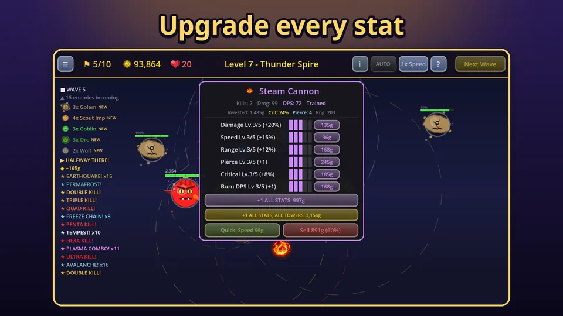

Fusion is the most powerful tool in Tower Defense Kingdom, and it is easy to miss on your first run. In this tower fusion guide I explain the rules, show all six fusion towers and say when merging is worth it. If you are new to how elements interact, read how elemental combos work first, because fusion is built on top of them.
What fusion does
A normal tower has one element and triggers a combo only when another element happens to hit the same enemy within 1.5 seconds. A fusion tower is two elements in one tower, and it always triggers the combo of its two elements on every hit. No overlap needed, no luck involved.

The rules
- The two towers must be on neighbouring slots of the ring. The last slot and the first one count as neighbours too.
- They must have different elements. Two fire towers cannot fuse.
- Each must have at least 3 total stat levels of upgrades. A freshly built tower is not ready.
- Neither may already be a fusion tower.
When you merge, the second tower disappears and its slot is free again. Half of the combined stat levels and half of the gold invested carry over to the fusion tower. Nothing is refunded for the second tower, so fuse towers you have already put upgrades into, but do not rush it. Fusion tower types cannot be bought from the build menu, which is why upgrading the right pair first matters.
The six fusion towers
There is one fusion for every pair of elements:
- Steam Cannon (fire and ice): 30 base damage, range 150, applies steam's slow.
- Lava Forge (earth and fire): 45 base damage, range 135, melts armour.
- Plasma Coil (fire and lightning): 40 base damage, range 170, burns.
- Frost Arc (ice and lightning): 28 base damage, range 170, freezes.
- Glacier Core (earth and ice): 40 base damage, range 135, roots and slows.
- Quake Spire (earth and lightning): 42 base damage, range 160, stuns.
For comparison, a basic Fire Tower starts at 25 damage and 140 range, and a Lightning Tower at 20 damage and 180 range. Fusion towers start higher than either of their parents, before you add upgrades.
Is fusion worth it?
Usually yes, but it is a trade. You turn two slots into one, so you lose a slot and half of the upgrades. In exchange you get a tower that makes its combo on every hit, with a higher base damage. That pays off in a few situations:
- Against bosses and tough enemies, where steady combo damage matters more than a lucky overlap.
- When you have more upgrades than slots. Late maps give you up to 12 slots, but you are limited by gold, and a fusion tower concentrates what you have spent.
- For control. Frost Arc, Glacier Core and Quake Spire hold enemies on every hit, which gives your other towers time.
It is less useful in the first few waves of a level when your gold is better spent on a third or fourth tower. My own rule is to fuse once a pair has a few levels in each tower and the wave list shows tougher enemies ahead.
Plan your ring before you fuse
Because only neighbouring slots can fuse, the order in which you fill the ring matters. If you put a fire tower in slot 1 and an ice tower in slot 2, you can make a Steam Cannon later. If your fire and ice towers sit on opposite sides of the castle, they cannot. Think about which fusions you want when you place the first four towers, not when you are ready to merge.
A simple layout is to alternate elements around the ring, so every tower has two different neighbours. That also gives you the best chance of normal combos before you fuse anything, and it keeps your options open when the wave list shows enemies that resist one element. Check the level info panel, the small i button in the top bar, for a line about which elements the enemies of that level resist or ignore.
Upgrade first, then fuse
Fusion towers keep growing after the merge. They have the same upgrade lines as other towers: damage, speed, range, pierce and critical chance, plus a special line. Each stat goes to level 5, and costs go up with every level. The upgrade panel also shows kills, damage, DPS and gold invested, which helps you judge whether a tower is worth fusing. Once all six stats are maxed, a tower can be reinforced further, up to 10 more levels, as a late-game use for gold.

A good order of play is to build a pair of different elements next to each other, raise both to level 3 or so in the stats that suit them, fuse, then keep upgrading the fusion tower. You can also read the beginner tips for how to spend your first few thousand gold.
Try it
Install Tower Defense Kingdom from Google Play, upgrade a fire tower and an ice tower side by side, and make your first Steam Cannon. If you want to know what else the game has, here is the overview.
Frequently Asked Questions
How do I fuse towers in Tower Defense Kingdom?
Put two towers of different elements on neighbouring slots and upgrade each to at least 3 total stat levels. Then merge them. You get one fusion tower and the second slot becomes free again.
What carries over when two towers fuse?
Half of the combined stat levels and half of the combined gold invested carry over to the new tower. Nothing is refunded for the second tower, so fuse towers you have upgraded for a reason.
Can a fusion tower be fused again?
No. Only towers that are not already fusions can be merged. A fusion tower is final, but you can keep upgrading its stats and reinforce it once all six stats are maxed.